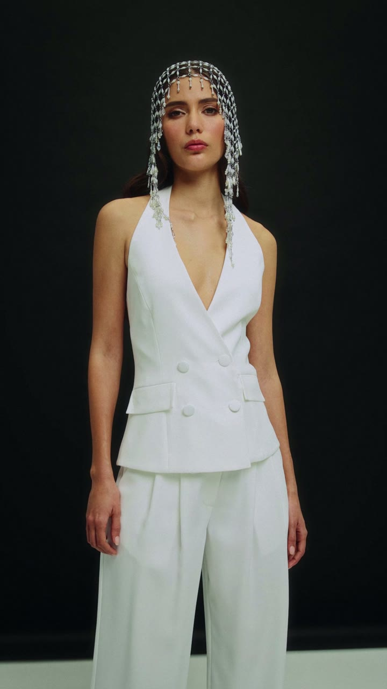
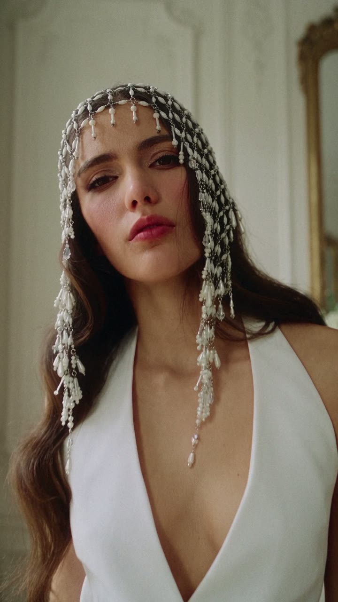
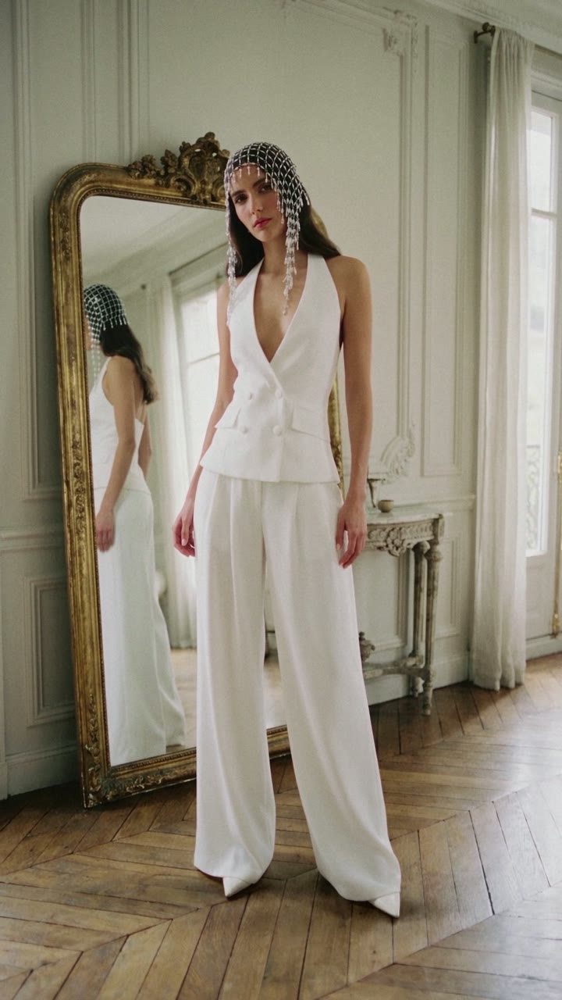

Marka iş birliği · Hibrit üretim
Happy to Wear
Gerçek çekim, sınırsız sahne.
Fotoğrafları Happy to Wear çekti; sahneleri ve hareketi yapay zekayla ürettik. Marka çekimiyle AI üretimini tek filmde buluşturan bir çalışma.
12 snProjeyi incele